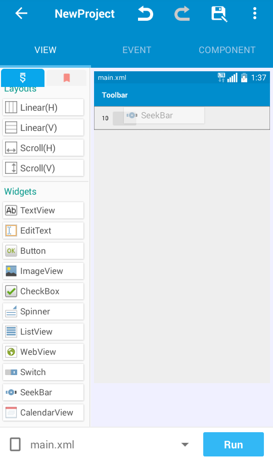
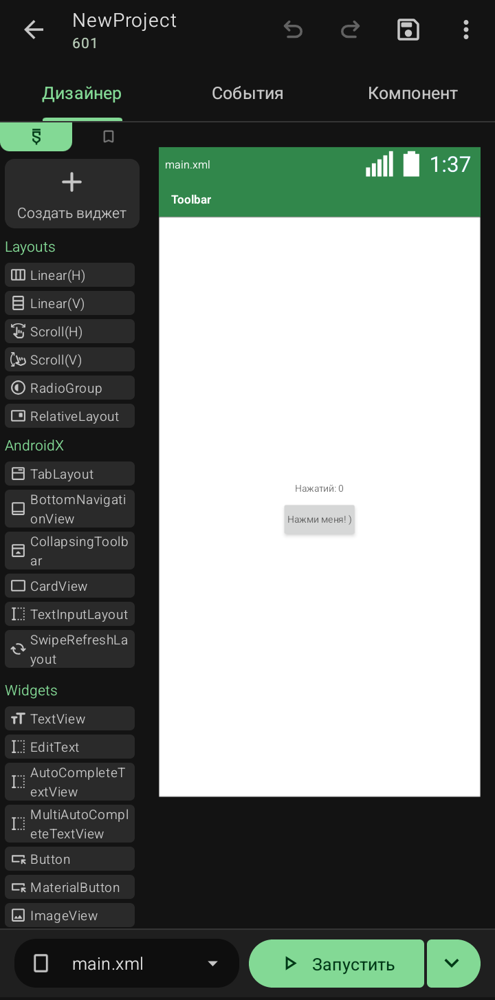

перестал получать обновления из-за проблем с управлением и развитием других сервисов. Однако благодаря усилиям энтузиастов со всего мира появился Sketchware Pro

Sketchware Pro — открытый проект, который продолжает развиваться и радовать пользователей новыми возможностями.
Sketchware Pro 7 · Автор: RasNikGal · © 2026